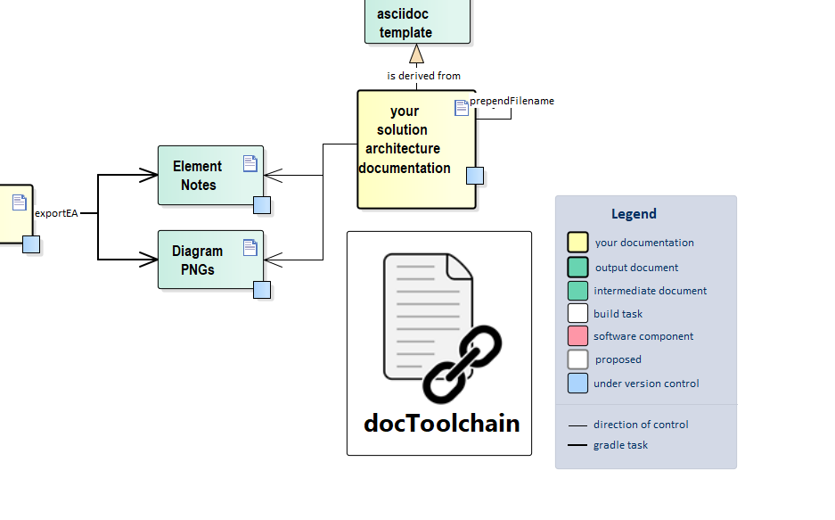

4 minutes to read
exportEA
|
Important
|
Currently this feature is WINDOWS-only. See related issue |

|
Tip
|
Blog-Posts: JIRA to Sparx EA, Did you ever wish you had better Diagrams? |
Configuration
By default no special configuration is necessary. But, to be more specific on the project and its packages to be used for export, six optional parameter configurations are available. The parameters can be used independently from each other. A sample how to edit your projects Config.groovy is given in the 'Config.groovy' of the docToolchain project itself.
- connection
-
Set the connection to a certain project or comment it out to use all project files inside the src folder or its child folder.
- packageFilter
-
Add one or multiple packageGUIDs to be used for export. All packages are analysed, if no packageFilter is set.
- exportPath
-
Relative path to base 'docDir' to which the diagrams and notes are to be exported. Default: "src/docs". Example: docDir = 'D:\work\mydoc\' ; exportPath = 'src/pdocs' ; Images will be exported to 'D:\work\mydoc\src\pdocs\images\ea', Notes will be exported to 'D:\work\mydoc\src\pdocs\ea',
- searchPath
-
Relative path to base 'docDir', in which Enterprise Architect project files are searched Default: "src/docs". Example: docDir = 'D:\work\mydoc\' ; exportPath = 'src/projects' ; Lookup for eap and eapx files starts in 'D:\work\mydoc\src\projects' and goes down the folder structure. Note: In case parameter 'connection' is already defined, the searchPath value is used, too. exportEA starts opening the database parameter 'connection' first and looks afterwards for further project files either in the searchPath (if set) or in the docDir folder of the project.
- glossaryAsciiDocFormat
-
Depending on this configuration option, the EA project glossary is exported. If it is not set or an empty string, no glossary is exported. The glossaryAsciiDocFormat string is used to format each glossary entry in a certain asciidoc format. Following placeholder for the format string are defined: ID, TERM, MEANING, TYPE. One or many of these placeholder can be used by the output format.
Example: A valid output format to include the glossary as a flat list. The file can be included where needed in the documentation.
glossaryAsciiDocFormat = "TERM:: MEANING"
Other format strings can be used to include it as a table row. The glossary is sorted by terms in alphabetical order.
- glossaryTypes
-
This parameter is used in case a glossaryAsciiDocFormat is defined, otherwise it is not evaluated. It is used to filter for certain types. If the glossaryTypes list is empty, all entries will be used. Example: glossaryTypes = ["Business", "Technical"]
- diagramAttributes
-
Beside the diagram image, an EA diagram offers several useful attributes which could be required in the resulting document. If set, the string is used to create and store the diagram attributes to be included in the document. These placeholders are defined and filled with the diagram attributes if used in the diagramAttributes string: %DIAGRAM_AUTHOR%, %DIAGRAM_CREATED%, %DIAGRAM_GUID%, %DIAGRAM_MODIFIED%, %DIAGRAM_NAME%. %DIAGRAM_NOTES%, Example: diagramAttributes = "Last modification: %DIAGRAM_MODIFIED%"
You can add the string %NEWLINE% where a line break shall be added.
The resulting text is stored beside the diagram image using same path and file named, but different file extension (.ad). This can included in the document if required. If diagramAttributes is not set or string is empty, no file is written.
Glossary export
By setting the glossaryAsciiDocFormat the glossary terms stored in the EA project is exported into a folder named 'glossary' below the configured exportPath. In case multiple EA projects were found for export, one glossary per project is exported. Each named with the projects GUID plus extension '.ad'. Each single file will be filtered (see glossaryTypes) and sorted in alphabetical order. In addition, a global glossary is created by using all single glossary files. This global file is named 'glossary.ad' and is also placed in the glossary folder. The global glossary is also filtered and sorted. In case there is one EA project only, the global glossary is written only.
Source
build.gradle
task exportEA(
dependsOn: [streamingExecute],
description: 'exports all diagrams and some texts from EA files',
group: 'docToolchain'
) {
doFirst {
}
doLast {
logger.info("docToolchain > exportEA: " + docDir)
logger.info("docToolchain > exportEA: " + mainConfigFile)
def configFile = new File(docDir, mainConfigFile)
def config = new ConfigSlurper().parse(configFile.text)
def scriptParameterString = ""
def exportPath = ""
def searchPath = ""
def glossaryPath = ""
def readme = """This folder contains exported diagrams or notes from Enterprise Architect.
Please note that these are generated files but reside in the `src`-folder in order to be versioned.
This is to make sure that they can be used from environments other than windows.
# Warning!
**The contents of this folder will be overwritten with each re-export!**
use `gradle exportEA` to re-export files
"""
if (!config.exportEA.connection.isEmpty()) {
logger.info("docToolchain > exportEA: found " + config.exportEA.connection)
scriptParameterString = scriptParameterString + "-c \"${config.exportEA.connection}\""
}
if (!config.exportEA.packageFilter.isEmpty()) {
def packageFilterToCreate = config.exportEA.packageFilter as List
logger.info("docToolchain > exportEA: package filter list size: " + packageFilterToCreate.size())
packageFilterToCreate.each { packageFilter ->
scriptParameterString = scriptParameterString + " -p \"${packageFilter}\""
}
}
if (!config.exportEA.exportPath.isEmpty()) {
exportPath = new File(docDir, config.exportEA.exportPath).getAbsolutePath()
} else {
exportPath = new File(docDir, 'src/docs').getAbsolutePath()
}
if (!config.exportEA.searchPath.isEmpty()) {
searchPath = new File(docDir, config.exportEA.searchPath).getAbsolutePath()
}
else if (!config.exportEA.absoluteSearchPath.isEmpty()) {
searchPath = new File(config.exportEA.absoluteSearchPath).getAbsolutePath()
}
else {
searchPath = new File(docDir, 'src').getAbsolutePath()
}
scriptParameterString = scriptParameterString + " -d \"$exportPath\""
scriptParameterString = scriptParameterString + " -s \"$searchPath\""
logger.info("docToolchain > exportEA: exportPath: " + exportPath)
//remove old glossary files/folder if exist
new File(exportPath, 'glossary').deleteDir()
//set the glossary file path in case an output format is configured, other no glossary is written
if (!config.exportEA.glossaryAsciiDocFormat.isEmpty()) {
//create folder to store glossaries
new File(exportPath, 'glossary/.').mkdirs()
glossaryPath = new File(exportPath, 'glossary').getAbsolutePath()
scriptParameterString = scriptParameterString + " -g \"$glossaryPath\""
}
//configure additional diagram attributes to be exported
if (!config.exportEA.diagramAttributes.isEmpty()) {
scriptParameterString = scriptParameterString + " -da \"$config.exportEA.diagramAttributes\""
}
//make sure path for notes exists
//and remove old notes
new File(exportPath, 'ea').deleteDir()
//also remove old diagrams
new File(exportPath, 'images/ea').deleteDir()
//create a readme to clarify things
new File(exportPath, 'images/ea/.').mkdirs()
new File(exportPath, 'images/ea/readme.ad').write(readme)
new File(exportPath, 'ea/.').mkdirs()
new File(exportPath, 'ea/readme.ad').write(readme)
//execute through cscript in order to make sure that we get WScript.echo right
"%SystemRoot%\\System32\\cscript.exe //nologo ${projectDir}/scripts/exportEAP.vbs ${scriptParameterString}".executeCmd()
//the VB Script is only capable of writing iso-8859-1-Files.
//we now have to convert them to UTF-8
new File(exportPath, 'ea/.').eachFileRecurse { file ->
if (file.isFile()) {
println "exported notes " + file.canonicalPath
file.write(file.getText('iso-8859-1'), 'utf-8')
}
}
//sort, filter and reformat a glossary if an output format is configured
if (!config.exportEA.glossaryAsciiDocFormat.isEmpty()) {
def glossaryTypes
if (!config.exportEA.glossaryTypes.isEmpty()) {
glossaryTypes = config.exportEA.glossaryTypes as List
}
new GlossaryHandler().execute(glossaryPath, config.exportEA.glossaryAsciiDocFormat, glossaryTypes);
}
}
}scripts/exportEAP.vbs
' based on the "Project Interface Example" which comes with EA
' http://stackoverflow.com/questions/1441479/automated-method-to-export-enterprise-architect-diagrams
Dim EAapp 'As EA.App
Dim Repository 'As EA.Repository
Dim FS 'As Scripting.FileSystemObject
Dim projectInterface 'As EA.Project
Const ForAppending = 8
Const ForWriting = 2
' Helper
' http://windowsitpro.com/windows/jsi-tip-10441-how-can-vbscript-create-multiple-folders-path-mkdir-command
Function MakeDir (strPath)
Dim strParentPath, objFSO
Set objFSO = CreateObject("Scripting.FileSystemObject")
On Error Resume Next
strParentPath = objFSO.GetParentFolderName(strPath)
If Not objFSO.FolderExists(strParentPath) Then MakeDir strParentPath
If Not objFSO.FolderExists(strPath) Then objFSO.CreateFolder strPath
On Error Goto 0
MakeDir = objFSO.FolderExists(strPath)
End Function
' Replaces certain characters with '_' to avoid unwanted file or folder names causing errors or structure failures.
' Regular expression can easily be extended with further characters to be replaced.
Function NormalizeName(theName)
dim re : Set re = new regexp
re.Pattern = "[\\/\[\]\s]"
re.Global = True
NormalizeName = re.Replace(theName, "_")
End Function
Sub WriteNote(currentModel, currentElement, notes, prefix)
If (Left(notes, 6) = "{adoc:") Then
strFileName = Mid(notes,7,InStr(notes,"}")-7)
strNotes = Right(notes,Len(notes)-InStr(notes,"}"))
set objFSO = CreateObject("Scripting.FileSystemObject")
If (currentModel.Name="Model") Then
' When we work with the default model, we don't need a sub directory
path = objFSO.BuildPath(exportDestination,"ea/")
Else
path = objFSO.BuildPath(exportDestination,"ea/"&NormalizeName(currentModel.Name)&"/")
End If
MakeDir(path)
post = ""
If (prefix<>"") Then
post = "_"
End If
MakeDir(path&prefix&post)
set objFile = objFSO.OpenTextFile(path&prefix&post&strFileName&".ad",ForAppending, True)
name = currentElement.Name
name = Replace(name,vbCr,"")
name = Replace(name,vbLf,"")
if (Left(strNotes, 3) = vbCRLF&"|") Then
' content should be rendered as table - so don't interfere with it
objFile.WriteLine(vbCRLF)
else
'let's add the name of the object
objFile.WriteLine(vbCRLF&vbCRLF&"."&name)
End If
objFile.WriteLine(vbCRLF&strNotes)
objFile.Close
if (prefix<>"") Then
' write the same to a second file
set objFile = objFSO.OpenTextFile(path&prefix&".ad",ForAppending, True)
objFile.WriteLine(vbCRLF&vbCRLF&"."&name&vbCRLF&strNotes)
objFile.Close
End If
End If
End Sub
Sub SyncJira(currentModel, currentDiagram)
notes = currentDiagram.notes
set currentPackage = Repository.GetPackageByID(currentDiagram.PackageID)
updated = 0
created = 0
If (Left(notes, 6) = "{jira:") Then
WScript.echo " >>>> Diagram jira tag found"
strSearch = Mid(notes,7,InStr(notes,"}")-7)
Set objShell = CreateObject("WScript.Shell")
'objShell.CurrentDirectory = fso.GetFolder("./scripts")
Set objExecObject = objShell.Exec ("cmd /K groovy ./scripts/exportEAPJiraPrintHelper.groovy """ & strSearch &""" & exit")
strReturn = ""
x = 0
y = 0
Do While Not objExecObject.StdOut.AtEndOfStream
output = objExecObject.StdOut.ReadLine()
' WScript.echo output
jiraElement = Split(output,"|")
name = jiraElement(0)&":"&vbCR&vbLF&jiraElement(4)
On Error Resume Next
Set requirement = currentPackage.Elements.GetByName(name)
On Error Goto 0
if (IsObject(requirement)) then
' element already exists
requirement.notes = ""
requirement.notes = requirement.notes&"<a href='"&jiraElement(5)&"'>"&jiraElement(0)&"</a>"&vbCR&vbLF
requirement.notes = requirement.notes&"Priority: "&jiraElement(1)&vbCR&vbLF
requirement.notes = requirement.notes&"Created: "&jiraElement(2)&vbCR&vbLF
requirement.notes = requirement.notes&"Assignee: "&jiraElement(3)&vbCR&vbLF
requirement.Update()
updated = updated + 1
else
Set requirement = currentPackage.Elements.AddNew(name,"Requirement")
requirement.notes = ""
requirement.notes = requirement.notes&"<a href='"&jiraElement(5)&"'>"&jiraElement(0)&"</a>"&vbCR&vbLF
requirement.notes = requirement.notes&"Priority: "&jiraElement(1)&vbCR&vbLF
requirement.notes = requirement.notes&"Created: "&jiraElement(2)&vbCR&vbLF
requirement.notes = requirement.notes&"Assignee: "&jiraElement(3)&vbCR&vbLF
requirement.Update()
currentPackage.Elements.Refresh()
Set dia_obj = currentDiagram.DiagramObjects.AddNew("l="&(10+x*200)&";t="&(10+y*50)&";b="&(10+y*50+44)&";r="&(10+x*200+180),"")
x = x + 1
if (x>3) then
x = 0
y = y + 1
end if
dia_obj.ElementID = requirement.ElementID
dia_obj.Update()
created = created + 1
end if
Loop
Set objShell = Nothing
WScript.echo "created "&created&" requirements"
WScript.echo "updated "&updated&" requirements"
End If
End Sub
' This sub routine checks if the format string defined in diagramAttributes
' does contain any characters. It replaces the known placeholders:
' %DIAGRAM_AUTHOR%, %DIAGRAM_CREATED%, %DIAGRAM_GUID%, %DIAGRAM_MODIFIED%,
' %DIAGRAM_NAME%, %DIAGRAM_NOTES%
' with the attribute values read from the EA diagram object.
' None, one or multiple number of placeholders can be used to create a diagram attribute
' to be added to the document. The attribute string is stored as a file with the same
' path and name as the diagram image, but with suffix .ad. So, it can
' easily be included in an asciidoc file.
Sub SaveDiagramAttribute(currentDiagram, path, diagramName)
If Len(diagramAttributes) > 0 Then
filledDiagAttr = diagramAttributes
set objFSO = CreateObject("Scripting.FileSystemObject")
filename = objFSO.BuildPath(path, diagramName & ".ad")
set objFile = objFSO.OpenTextFile(filename, ForWriting, True)
filledDiagAttr = Replace(filledDiagAttr, "%DIAGRAM_AUTHOR%", currentDiagram.Author)
filledDiagAttr = Replace(filledDiagAttr, "%DIAGRAM_CREATED%", currentDiagram.CreatedDate)
filledDiagAttr = Replace(filledDiagAttr, "%DIAGRAM_GUID%", currentDiagram.DiagramGUID)
filledDiagAttr = Replace(filledDiagAttr, "%DIAGRAM_MODIFIED%", currentDiagram.ModifiedDate)
filledDiagAttr = Replace(filledDiagAttr, "%DIAGRAM_NAME%", currentDiagram.Name)
filledDiagAttr = Replace(filledDiagAttr, "%DIAGRAM_NOTES%", currentDiagram.Notes)
filledDiagAttr = Replace(filledDiagAttr, "%NEWLINE%", vbCrLf)
objFile.WriteLine(filledDiagAttr)
objFile.Close
End If
End Sub
Sub SaveDiagram(currentModel, currentDiagram)
' Open the diagram
Repository.OpenDiagram(currentDiagram.DiagramID)
' Save and close the diagram
set objFSO = CreateObject("Scripting.FileSystemObject")
If (currentModel.Name="Model") Then
' When we work with the default model, we don't need a sub directory
path = objFSO.BuildPath(exportDestination,"/images/ea/")
Else
path = objFSO.BuildPath(exportDestination,"/images/ea/" & NormalizeName(currentModel.Name) & "/")
End If
path = objFSO.GetAbsolutePathName(path)
MakeDir(path)
diagramName = currentDiagram.Name
diagramName = Replace(diagramName,vbCr,"")
diagramName = Replace(diagramName,vbLf,"")
diagramName = NormalizeName(diagramName)
filename = objFSO.BuildPath(path, diagramName & ".png")
projectInterface.SaveDiagramImageToFile(filename)
WScript.echo " extracted image to " & filename
If Not IsEmpty(diagramAttributes) Then
SaveDiagramAttribute currentDiagram, path, diagramName
End If
Repository.CloseDiagram(currentDiagram.DiagramID)
' Write the note of the diagram
WriteNote currentModel, currentDiagram, currentDiagram.Notes, diagramName&"_notes"
For Each diagramElement In currentDiagram.DiagramObjects
Set currentElement = Repository.GetElementByID(diagramElement.ElementID)
WriteNote currentModel, currentElement, currentElement.Notes, diagramName&"_notes"
Next
For Each diagramLink In currentDiagram.DiagramLinks
set currentConnector = Repository.GetConnectorByID(diagramLink.ConnectorID)
WriteNote currentModel, currentConnector, currentConnector.Notes, diagramName&"_links"
Next
End Sub
'
' Recursively saves all diagrams under the provided package and its children
'
Sub DumpDiagrams(thePackage,currentModel)
Set currentPackage = thePackage
' export element notes
For Each currentElement In currentPackage.Elements
WriteNote currentModel, currentElement, currentElement.Notes, ""
' export connector notes
For Each currentConnector In currentElement.Connectors
' WScript.echo currentConnector.ConnectorGUID
if (currentConnector.ClientID=currentElement.ElementID) Then
WriteNote currentModel, currentConnector, currentConnector.Notes, ""
End If
Next
if (Not currentElement.CompositeDiagram Is Nothing) Then
SyncJira currentModel, currentElement.CompositeDiagram
SaveDiagram currentModel, currentElement.CompositeDiagram
End If
if (Not currentElement.Elements Is Nothing) Then
DumpDiagrams currentElement,currentModel
End If
Next
' Iterate through all diagrams in the current package
For Each currentDiagram In currentPackage.Diagrams
SyncJira currentModel, currentDiagram
SaveDiagram currentModel, currentDiagram
Next
' Process child packages
Dim childPackage 'as EA.Package
' otPackage = 5
if (currentPackage.ObjectType = 5) Then
For Each childPackage In currentPackage.Packages
call DumpDiagrams(childPackage, currentModel)
Next
End If
End Sub
Function SearchEAProjects(path)
For Each folder In path.SubFolders
SearchEAProjects folder
Next
For Each file In path.Files
If fso.GetExtensionName (file.Path) = "eap" OR fso.GetExtensionName (file.Path) = "eapx" Then
WScript.echo "found "&file.path
If (Left(file.name, 1) = "_") Then
WScript.echo "skipping, because it start with `_` (replication)"
Else
OpenProject(file.Path)
End If
End If
Next
End Function
'Gets the package object as referenced by its GUID from the Enterprise Architect project.
'Looks for the model node, the package is a child of as it is required for the diagram export.
'Calls the Sub routine DumpDiagrams for the model and package found.
'An error is printed to console only if the packageGUID is not found in the project.
Function DumpPackageDiagrams(EAapp, packageGUID)
WScript.echo "DumpPackageDiagrams"
WScript.echo packageGUID
Dim package
Set package = EAapp.Repository.GetPackageByGuid(packageGUID)
If (package Is Nothing) Then
WScript.echo "invalid package - as package is not part of the project"
Else
Dim currentModel
Set currentModel = package
while currentModel.IsModel = false
Set currentModel = EAapp.Repository.GetPackageByID(currentModel.parentID)
wend
' Iterate through all child packages and save out their diagrams
' save all diagrams of package itself
call DumpDiagrams(package, currentModel)
End If
End Function
Function FormatStringToJSONString(inputString)
outputString = Replace(inputString, "\", "\\")
outputString = Replace(outputString, """", "\""")
outputString = Replace(outputString, vbCrLf, "\n")
outputString = Replace(outputString, vbLf, "\n")
outputString = Replace(outputString, vbCr, "\n")
FormatStringToJSONString = outputString
End Function
'If a valid file path is set, the glossary terms are read from EA repository,
'formatted in a JSON compatible format and written into file.
'The file is read and reformatted by the exportEA gradle task afterwards.
Function ExportGlossaryTermsAsJSONFile(EArepo)
If (Len(glossaryFilePath) > 0) Then
set objFSO = CreateObject("Scripting.FileSystemObject")
GUID = Replace(EArepo.ProjectGUID,"{","")
GUID = Replace(GUID,"}","")
currentGlossaryFile = objFSO.BuildPath(glossaryFilePath,"/"&GUID&".ad")
set objFile = objFSO.OpenTextFile(currentGlossaryFile,ForAppending, True)
Set glossary = EArepo.Terms()
objFile.WriteLine("[")
dim counter
counter = 0
For Each term In glossary
if (counter > 0) Then
objFile.Write(",")
end if
objFile.Write("{ ""term"" : """&FormatStringToJSONString(term.term)&""", ""meaning"" : """&FormatStringToJSONString(term.Meaning)&""",")
objFile.WriteLine(" ""termID"" : """&FormatStringToJSONString(term.termID)&""", ""type"" : """&FormatStringToJSONString(term.type)&""" }")
counter = counter + 1
Next
objFile.WriteLine("]")
objFile.Close
End If
End Function
Sub OpenProject(file)
' open Enterprise Architect
Set EAapp = CreateObject("EA.App")
WScript.echo "opening Enterprise Architect. This might take a moment..."
' load project
EAapp.Repository.OpenFile(file)
' make Enterprise Architect to not appear on screen
EAapp.Visible = False
' get repository object
Set Repository = EAapp.Repository
' Show the script output window
' Repository.EnsureOutputVisible("Script")
call ExportGlossaryTermsAsJSONFile(Repository)
Set projectInterface = Repository.GetProjectInterface()
Dim childPackage 'As EA.Package
' Iterate through all model nodes
Dim currentModel 'As EA.Package
If (InStrRev(file,"{") > 0) Then
' the filename references a GUID
' like {04C44F80-8DA1-4a6f-ECB8-982349872349}
WScript.echo file
GUID = Mid(file, InStrRev(file,"{")+0,38)
WScript.echo GUID
' Iterate through all child packages and save out their diagrams
call DumpPackageDiagrams(EAapp, GUID)
Else
If packageFilter.Count = 0 Then
WScript.echo "done"
' Iterate through all model nodes
For Each currentModel In Repository.Models
' Iterate through all child packages and save out their diagrams
For Each childPackage In currentModel.Packages
call DumpDiagrams(childPackage,currentModel)
Next
Next
Else
' Iterate through all packages found in the package filter given by script parameter.
For Each packageGUID In packageFilter
call DumpPackageDiagrams(EAapp, packageGUID)
Next
End If
End If
EAapp.Repository.CloseFile()
' Since EA 15.2 the Enterprise Architect background process hangs without calling Exit explicitly
EAapp.Repository.Exit()
End Sub
Private connectionString
Private packageFilter
Private exportDestination
Private searchPath
Private glossaryFilePath
Private diagramAttributes
exportDestination = "./src/docs"
searchPath = "./src"
Set packageFilter = CreateObject("System.Collections.ArrayList")
Set objArguments = WScript.Arguments
Dim argCount
argCount = 0
While objArguments.Count > argCount+1
Select Case objArguments(argCount)
Case "-c"
connectionString = objArguments(argCount+1)
Case "-p"
packageFilter.Add objArguments(argCount+1)
Case "-d"
exportDestination = objArguments(argCount+1)
Case "-s"
searchPath = objArguments(argCount+1)
Case "-g"
glossaryFilePath = objArguments(argCount+1)
Case "-da"
diagramAttributes = objArguments(argCount+1)
End Select
argCount = argCount + 2
WEnd
set fso = CreateObject("Scripting.fileSystemObject")
WScript.echo "Image extractor"
' Check both types in parallel - 1st check Enterprise Architect database connection, 2nd look for local project files
If Not IsEmpty(connectionString) Then
WScript.echo "opening database connection now"
OpenProject(connectionString)
End If
WScript.echo "looking for .eap(x) files in " & fso.GetAbsolutePathName(searchPath)
' Dim f As Scripting.Files
SearchEAProjects fso.GetFolder(searchPath)
WScript.echo "finished exporting images"Feedback
Was this page helpful?
Glad to hear it! Please tell us how we can improve.
Sorry to hear that. Please tell us how we can improve.